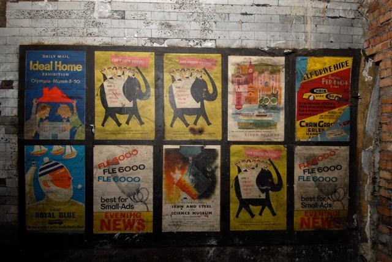

Hidden Posters of Notting Hill Gate Tube Station

The tube station at Notting Hill underwent renovation in/around 1956-1959. During the process they sealed off a portion of the passageways, and left things as they were, including this set of advertisements on the walls, which were only recently discovered.